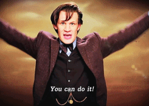

- Set the marker coordinates for optimization (check markers /uncheck cameras);
- Click Settings toolbar button on the Reference pane and set the coordinate system;
- Specify the assumed accuracy of GCP measurements and marker projections on the source photos
- click 'Optimize Camera Alignment'.
Possible issues: challenging terrain
- Homogenous surfaces cannot be processed by SfM algorithms
- Large water areas cannot be processed either (still water is too homogenous and waves move)
- Moving objects can be depicted on multiple photos
Solution
- Avoid large water areas or mask them
- Avoid large moving objects or mask them
- (great tutorial on how to work with masks in Agisoft Photoscan)
- Aviod homogenous surfaces or set GCPs (or other objects) on them
Possible issues: lack of memory
Agisoft Photoscan memory requirements
Aligning Photos

Building Model (Height-field mode)

Possible issues: lack of memory
Agisoft Photoscan memory requirements
Building Model (Arbitrary mode)

Decimating Model

Possible issues: log file
Possible issues:
... are endless
